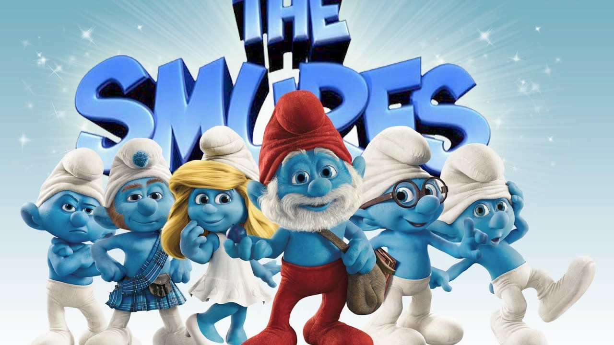

Cavaleiro dos Zodíaco
Saint Seiya ou Os Cavaleiros do Zodíaco é uma série japonesa de mangá e anime escrito e ilustrada por Masami Kurumada. Foi publicada originalmente na revista Weekly Shōnen Jump de dezembro de 1985, sendo sua primeira edição divida em duas partes entre dezembro de 1985 e janeiro de 1986, até dezembro de 1990.

Smurfs
Gargamel tenta capturar os Smurfs para tê-los como amuletos. Assustados e liderados pelo Smurf Desastrado, os pequeninos entram em uma gruta proibida durante a lua cheia. Eles acabam sendo transportados através de um portal para o Central Park, em Nova York. Lá, Desastrado, Ranzinza, Smurfette, Gênio, Papai Smurf e Valente encontram refúgio com um casal.